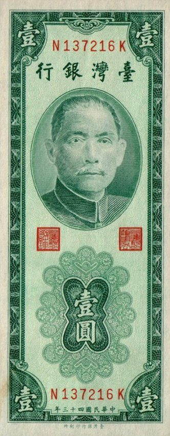

我們愈來愈習慣「手機嗶一下」就完成支付，但這套便利建立在電力與網路正常的前提上。戰爭或大災害一旦讓系統中斷——ATM 領不到、刷卡機黑屏、行動支付轉圈圈、銀行拉下鐵門——手機裡的餘額就成了「看得到、用不到」的數字。這篇教你怎麼做金融準備，讓你在金流停擺時，依然買得到水、加得到油、付得出錢。

行動支付與刷卡的每一筆交易，背後都需要電力、網路、銀行系統三者同時運作。災難會一次打斷它們：
這時候，能立刻完成交易的，往往只剩現金。這也是為什麼各國民防都把「備妥一定額度現金」列入基本準備。
目標是能支應全家數天到一兩週的基本開銷（水、食物、油料、交通、藥品），實際金額依家庭人數與生活成本自行調整。比金額更關鍵的是面額與分散：
| 原則 | 做法 | 為什麼 |
|---|---|---|
| 小面額為主 | 多備小鈔與硬幣，少放大鈔 | 停電時店家難找零，大鈔可能沒人收 |
| 分散存放 | 避難包、家中不同隱密處、隨身各放一些 | 避免遺失或受災時一次全失 |
| 防水防火 | 裝入防水袋，收在安全處 | 水火災害中保住現金 |
| 定期檢視 | 每半年確認金額與收藏狀態 | 與避難包一起檢查更新 |
現金屬於居家儲備的一環，可和〈居家儲備〉、〈緊急避難包〉一起規劃。
錢的問題不只有現金，還有「證明你是你、你的錢是你的」：
災難是詐騙的溫床。常見手法：假冒親友急需匯款、假冒官方發放補助要你交出帳戶與密碼、假募款。牢記：官方與銀行絕不會用電話或訊息索取你的密碼、OTP 驗證碼。遇到急迫要你轉帳的訊息，先透過另一個管道向本人或官方查證（辨識假訊息見〈資訊戰與假訊息辨識〉），別在慌亂中操作。
了解每種支付「靠什麼才能運作」，就懂得為什麼要留一手現金：
| 支付方式 | 需要 | 危機中的脆弱度 |
|---|---|---|
| 行動支付 | 手機電力＋網路＋系統 | 高——三者缺一即失靈 |
| 刷卡 | 電力＋刷卡機連線 | 高——停電斷網即黑屏 |
| 金融卡／ATM | 電力＋銀行系統 | 中高——停電或限提時受阻 |
| 現金 | 無 | 低——系統全斷仍可交易 |
愈往下愈「抗災」。平時盡量享受數位支付的便利與紀錄，但務必保留一定比例的現金作為系統全面失靈時的最後防線，兩者搭配才最穩妥。
危機過後，財務的挑戰從「怎麼付錢」轉為「怎麼恢復」：
備現金的目的是應急周轉，不是把家裡變金庫。放太多現金反而有失竊、火災、水災的風險，也是一種閒置。合理的做法是：備妥能撐過金融中斷空窗期的額度即可，其餘資產仍透過正規金融管道保管與分散。關鍵在於「系統斷線時手邊有得用」，而不是金額多寡。定期隨避難包一起檢視，讓這筆應急金保持在合理水位，用掉了就補回來，也別讓它變成閒置太久的死錢。
停電斷網時 ATM、刷卡、行動支付都可能失靈，能交易的往往只剩現金。
以支應全家數天到一兩週基本開銷為目標，多備小鈔硬幣、分散防水存放，大鈔停電時難找零。
存摺、卡片、保單掃描存手機與雲端、紙本入避難包，記下掛失與客服電話。
官方與銀行不會索取密碼與驗證碼；急迫要匯款的訊息務必另管道查證，別慌亂操作。
資金別集中單一帳戶，保有數位與實體存取管道，並留一部分現金當最後手段。
※ 本文為一般財務整備參考，整理自中央銀行、金管會、Ready.gov 等公開資訊，不構成投資或理財建議。個人財務規劃請諮詢合格專業人員，並以官方即時公告為準。